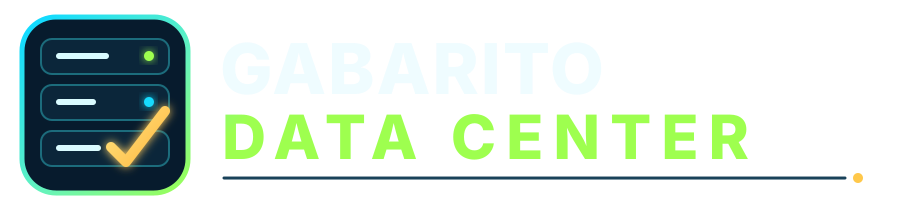

Escolha a vaga
Encontre a trilha mais próxima da função desejada no data center.

Explorar trilhasSimulados digitais Carreiras de missão crítica
Atualize o que você sabe.
Chegue mais preparado.
Diagnósticos e trilhas de questões para quem busca oportunidades em operação, infraestrutura, tecnologia, engenharia e áreas de suporte de data centers.
Sem cadastro no teste grátis Correção objetiva Acesso pelo celular
Método direto
Uma jornada simples para pessoas em início de carreira e também para profissionais formados há anos que precisam revisar conhecimentos.
Encontre a trilha mais próxima da função desejada no data center.
Resolva 2 módulos com 5 questões cada e identifique lacunas.
Quando quiser aprofundar, compre e acesse exclusivamente pela Kiwify.
Catálogo 2026
Escolha entre 12 testes gratuitos já disponíveis. Cada trilha também apresenta a estrutura do conteúdo premium preparado para a Kiwify.
Tente outro termo ou volte para a visualização completa.
A porta de entrada para o candidato conhecer o formato e medir o nível atual sem pagar.
Todas as trilhas possuem 2 módulos gratuitos e 10 questões comentadas.
Escolher teste grátisOs módulos completos, questões comentadas e materiais premium não serão enviados ao GitHub.
Conheça também
Soluções do mesmo ecossistema para concursos, profissões, ensino e preparação para o ENEM.
Catálogo de simulados digitais para ensino, concursos e profissões, com testes gratuitos e produtos premium.
Acesso completo a simulados digitais por disciplina para revisar e treinar conteúdos cobrados no ENEM.
Critérios do conteúdo
Cenários criados para revisão e diagnóstico, sem copiar provas ou processos seletivos.
Fundamentos, rotinas e decisões práticas organizados por área profissional.
Gabarito comentado para transformar erros em pontos objetivos de revisão.
Trilhas preparadas para evoluir conforme tecnologias e boas práticas do setor.
Perguntas frequentes
Sim. As 12 trilhas já estão disponíveis, cada uma com 2 módulos e 10 questões comentadas.
Não. No GitHub ficarão somente o portal público e os testes gratuitos. O premium será vendido e acessado exclusivamente pela Kiwify.
Não. Eles ajudam a revisar conhecimentos e identificar pontos de estudo, mas não substituem formação, certificações, experiência ou etapas oficiais de seleção.
Sim. O projeto foi pensado tanto para iniciantes quanto para profissionais que concluíram a formação há mais tempo e desejam atualizar conhecimentos.
12 testes gratuitos disponíveis
Responda, receba a correção comentada e descubra quais conhecimentos merecem revisão.